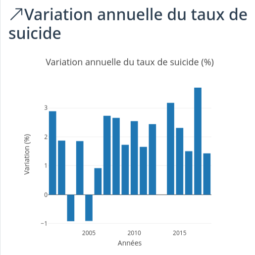
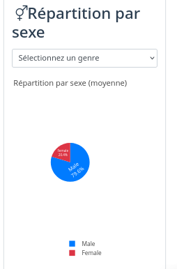
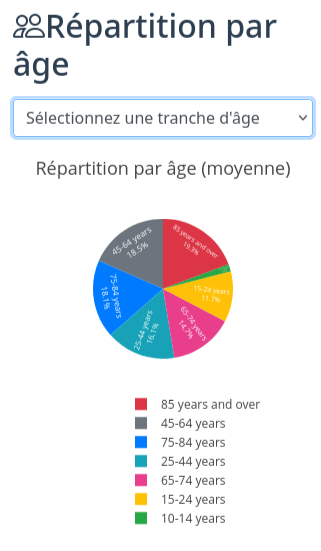

Analyse des indicateurs
Interprétation approfondie des données — 2000 à 2018
Cette page propose une analyse approfondie des principaux indicateurs liés au suicide aux États-Unis entre 2000 et 2018. Chaque section combine une capture des visualisations interactives du tableau de bord avec une interprétation détaillée.
Évolution du taux de suicide (2000–2018)

Analyse de l'évolution temporelle
L'analyse du taux de suicide global aux États-Unis entre 2000 et 2018 révèle une tendance à la hausse significative, particulièrement prononcée à partir de 2007–2008, coïncidant avec la crise économique mondiale.
On observe trois phases distinctes :
- 2000–2006 : Taux stable, entre 10 et 11 cas pour 100 000 habitants.
- 2007–2014 : Accélération progressive avec une hausse annuelle d'environ 2 %.
- 2015–2018 : Augmentation marquée — le taux dépasse 14 cas pour 100 000 habitants.
Augmentation de près de 30 % sur l'ensemble de la période, signalant une crise de santé publique majeure nécessitant des interventions ciblées.
Variations annuelles
Analyse des variations
L'analyse des variations annuelles repose sur la formule :
Variation (%) = [(Tauxn − Tauxn−1) / Tauxn−1] × 100
Les barres vertes indiquent une augmentation du taux par rapport à l'année précédente, tandis que les barres rouges traduisent une baisse relative.
Ces fluctuations peuvent refléter l'impact de facteurs socio-économiques ou l'influence des politiques de santé publique mises en œuvre au fil du temps.

Disparités entre hommes et femmes

Analyse des différences de genre
La répartition par sexe révèle une disproportion significative entre hommes et femmes. Les hommes représentent approximativement 75–80 % des suicides, un ratio stable sur toute la période.
Cette disparité s'explique par plusieurs facteurs :
- Des méthodes généralement plus létales chez les hommes.
- Des comportements différents de recherche d'aide et d'expression de la détresse.
- Des pressions socioculturelles liées aux rôles de genre.
Bien que les tentatives de suicide soient plus nombreuses chez les femmes, le taux de suicide accompli est significativement plus élevé chez les hommes, soulignant la nécessité d'approches de prévention différenciées.
Vulnérabilité selon les tranches d'âge
Analyse démographique
L'analyse par tranche d'âge montre que certains groupes sont particulièrement vulnérables. Les personnes d'âge moyen (45–64 ans) et les personnes âgées (65+) présentent généralement les taux les plus élevés.
L'évolution la plus préoccupante concerne les jeunes (15–24 ans) et les jeunes adultes (25–44 ans), qui ont connu les augmentations les plus importantes en pourcentage.
Cette tendance chez les jeunes pourrait être liée à l'utilisation croissante des réseaux sociaux, à l'isolement social, aux pressions académiques et à l'accès limité aux services de santé mentale.
Augmentation de plus de 50 % du taux chez les 15–24 ans entre 2007 et 2018 — un signal d'alarme majeur pour les politiques de santé publique.

Disparités selon l'origine ethnique

Analyse des facteurs culturels et sociaux
La répartition par origine ethnique révèle des disparités importantes reflétant des différences dans l'accès aux soins de santé mentale, le soutien communautaire, les facteurs économiques et les normes culturelles.
Les populations blanches non hispaniques présentent généralement les taux les plus élevés, suivies par les populations amérindiennes et autochtones d'Alaska, particulièrement touchées dans certaines régions.
Les populations afro-américaines, hispaniques et asiatiques affichent des taux significativement plus bas en moyenne.
Ces différences soulignent l'importance de programmes de prévention culturellement adaptés et de recherches supplémentaires sur les facteurs protecteurs spécifiques à chaque communauté.
Conclusion et perspectives
L'analyse des données sur le suicide aux États-Unis entre 2000 et 2018 met en évidence une augmentation préoccupante du phénomène, avec des disparités importantes selon le sexe, l'âge et l'origine ethnique.
Ces résultats suggèrent la nécessité de :
- Renforcer les programmes de prévention ciblés pour les groupes les plus à risque.
- Améliorer l'accès aux services de santé mentale, particulièrement dans les zones rurales et les communautés défavorisées.
- Développer des approches spécifiques pour les hommes, moins susceptibles de chercher de l'aide.
- Mettre en place des initiatives dédiées aux jeunes dans les milieux scolaires et universitaires.
- Poursuivre la recherche sur les facteurs de risque et de protection spécifiques à chaque groupe démographique.